“We zoeken in de eerste plaats mensen die met de glimlach komen werken. Nestor voelt dat heel goed aan en stuurt ons alleen kandidaten door die in dat plaatje passen.”
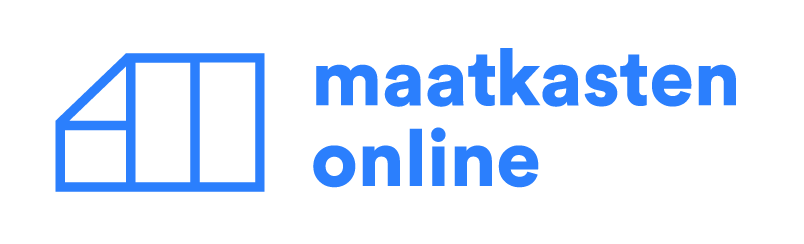
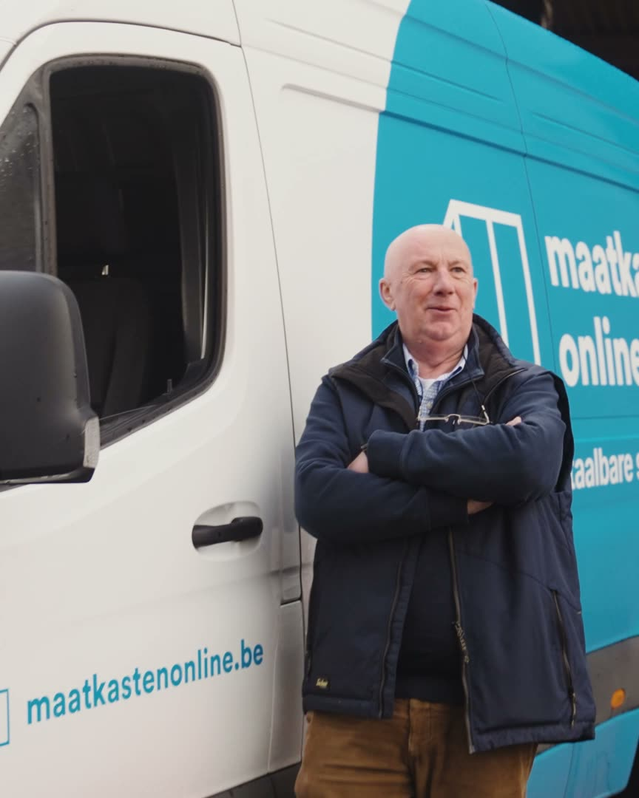
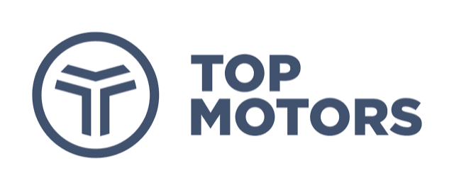
“We geven gewoon de uren door, verder regelt Nestor alles.”
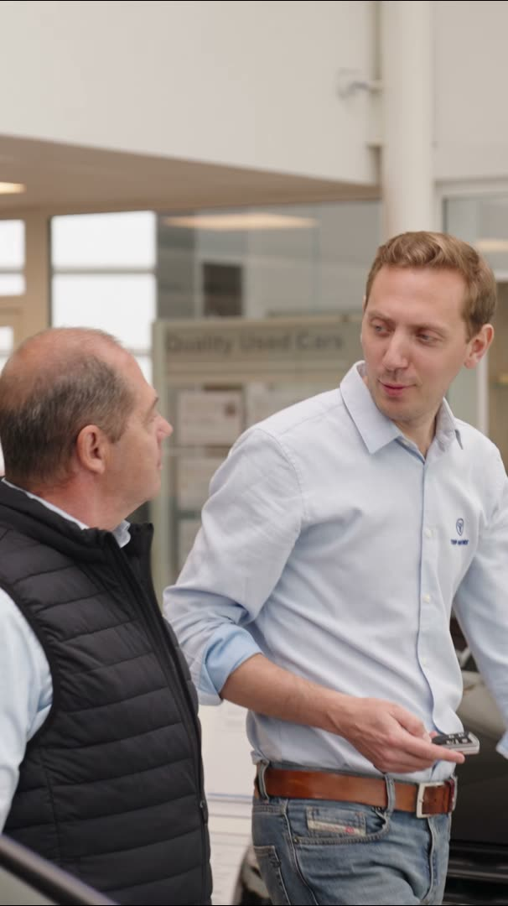
“Dentaal Tema en Nestor zijn als partners die elkaar perfect aanvoelen. Na al die jaren loopt onze samenwerking zo vlot dat mijn collega’s en ik er nauwelijks nog tijd in moeten steken.”
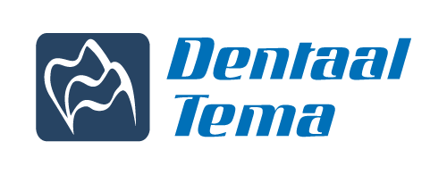
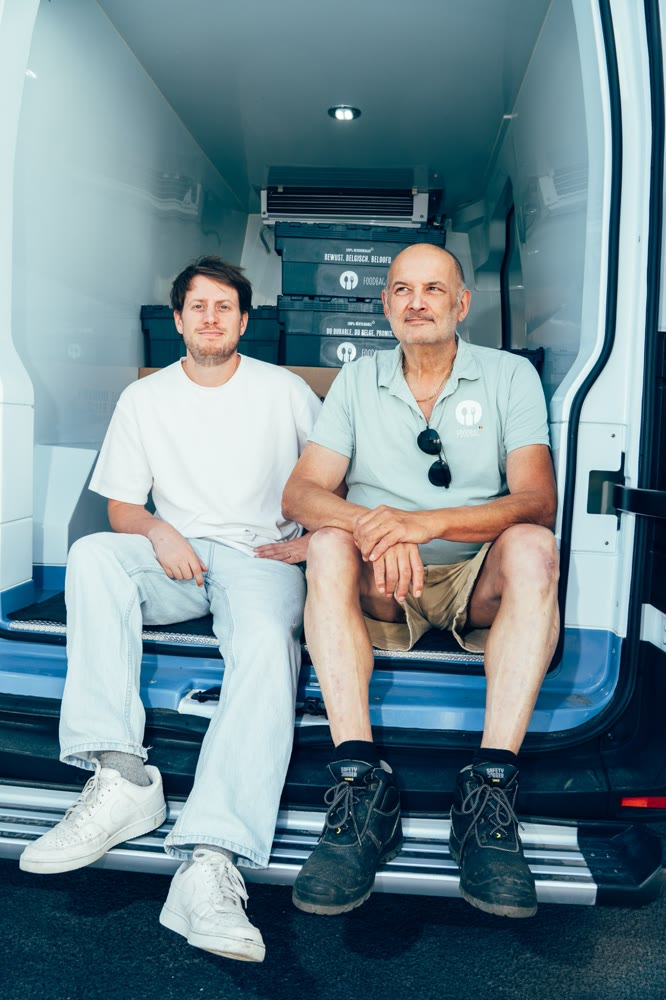
“Ze zijn betrouwbaar en zeer zelfstandig. De kwaliteit die we terugkrijgen van onze chauffeurs ligt heel hoog.”
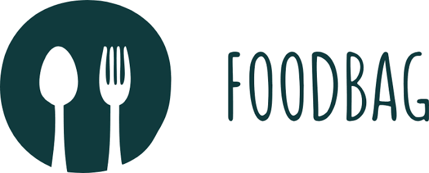
“Het is voor ons een zeer positief verhaal. Ze zijn gemotiveerd en bovendien zeker niet te duur in vergelijking met andere uitzendkrachten.”
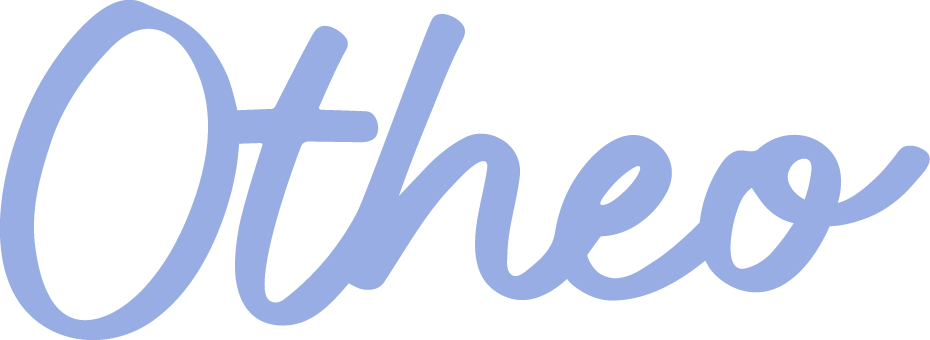
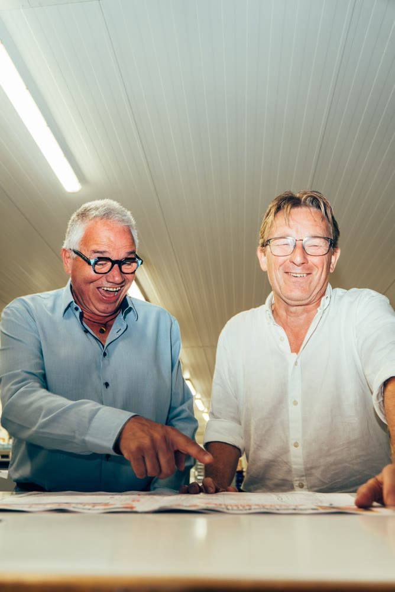
“Ik kan me volledig op mijn werk concentreren en hoef me nergens zorgen over te maken. Dat is een ongelooflijke luxe.”
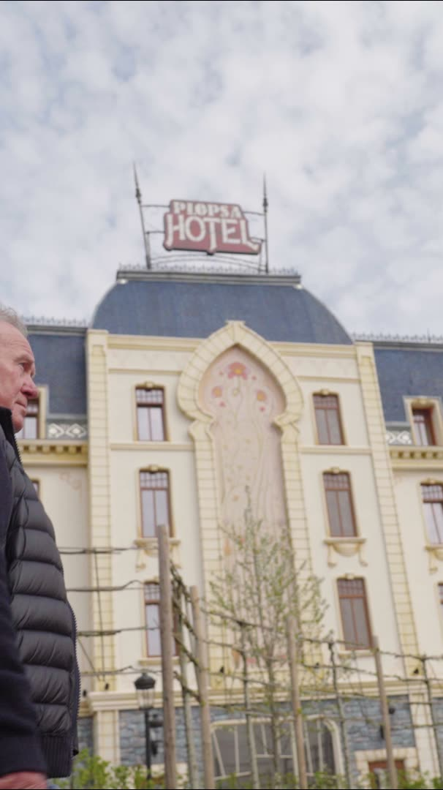
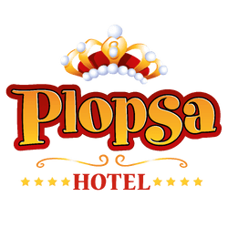
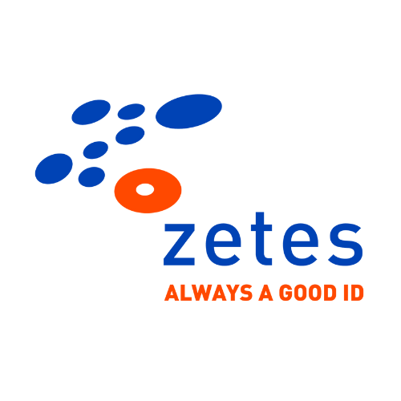
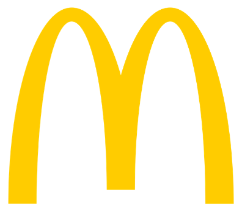
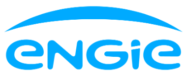
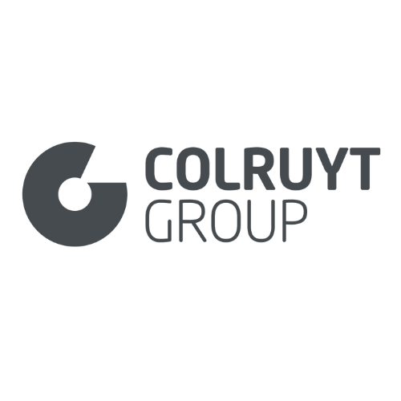
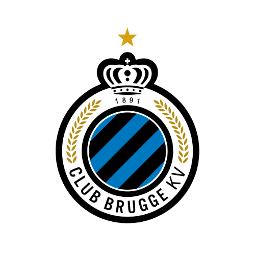